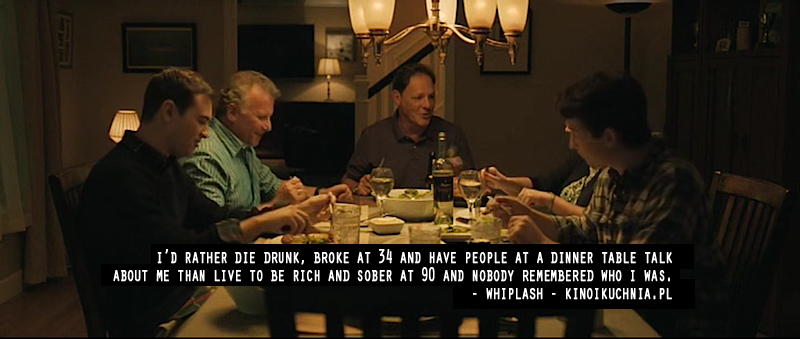

我想要什么
今天和大家说到这个话题的时候我还有点惊讶，自己居然没有一个准备好的答案。
如果突然问我，我应该会回答‘钱’，因为钱是通货。和电能一样，大多数能量都可以转化成电能；电能也可以转化为其他能量。
梦想
思老师说他的梦想是当地铁导流员，他小时候羡慕地铁导流员每天上班能看到形形色色的人。
他现在的条件完全允许他无痛迁徙到地铁导流这份工作上，但是他并没有直接辞职，而是选择保留这个梦想，继续在我司工作。
我想可能思老师一辈子都不会去当地铁导流，这个梦在他这里就是个梦，而已。可能在拥有无痛迁徙的能力之后，这个梦想对他的吸引力就不如以前了。既然随时都可以辞职去完成自己的梦想，那还是不要改变，继续走。
私以为，实现梦想的道路并不是直达的：由于对自己的要求、对机遇的把控，很多人终其一生都不会圆梦。斯老师这种就属于超额完成了。让一个人，尤其是超额完成的这批人突然从一个轨道更换到另一个轨道是需要很大勇气的。
思老师自己说的，由于家庭的影响，他需要不会挨饿的安全感，所以才继续上班，而不是去当导流。我遇见很多人都是追求安稳的，现今的环境会引导人们去追求安稳。比如买房成家、比如小鸡长大了就变成了鹅；鹅长大了，就变成了羊；羊再长大了，就变成了牛；等牛长大了，共产主义就到了。
YOLO
我同意说，成长的环境很大程度上决定了一个人的核心部分：这里指的既是三观，也是 ‘follow your heart’ 的 ‘heart’。这些核心部分在 ’people sure change’ 的过程中是很难改变的，很有可能会伴随这个人一生。那么是否应该在成长的环境中给人以尽量大的自由，将这个人的一生尽可能的交给他自己来决策呢？
我希望在我老的时候，不会因为自己没有做过某事、再也无法尝试而追悔。我可以锻炼我的心智，让我在那个时候不再在意没有做过的事，让我在那个时候不再追悔。当然也可以选择尽可能的做，将这些作为酒后的谈资。

所以说需要锻炼肉体和精神的强健呢，我想我已经对精神的强健有了一定的概念了。
睡觉了。要活着。